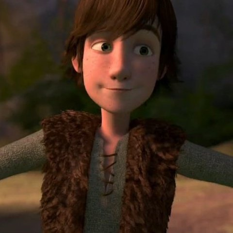
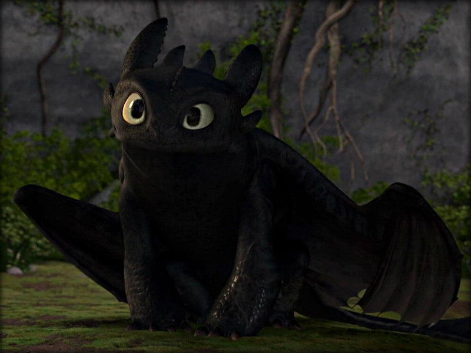
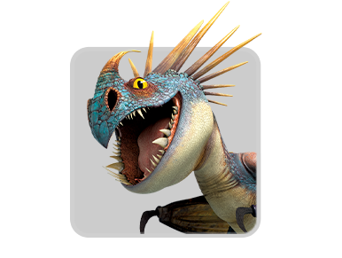
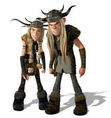
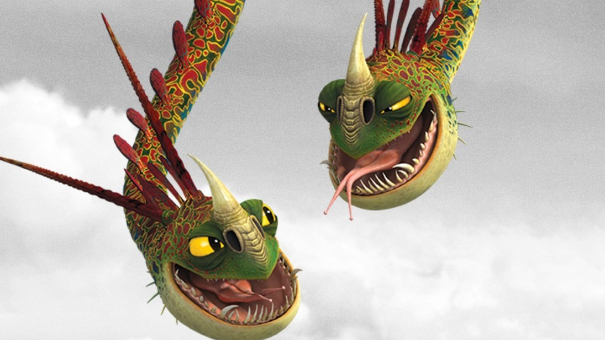
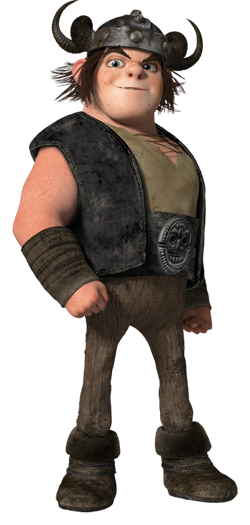
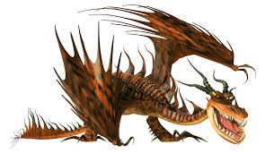
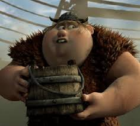
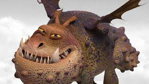

Inside things about the people and dragons of how to train your dragon
Main Characters
Hiccup
Hiccup Haddok is the son of the chif Stoick the Vast he is not as big as the rest of the teen vikings and is classafied as the acsedent waiting to happen.
Toothless
Toothless a NightFury shot down by Hiccup and has lost a tail wing. Toothless becomes Hiccups friend and gets a hand made tail.Toothless is a strike class dragon.
Second main Characters
Astrid
Astrid Hoferson is a determaned viking with a axe in hand and a bad attertued you dont want to get on her bad side but she dose have a soft side espesholy for hiccup oo

Stormfly
Stormfly a DeadlyNadder is a loyal dragon to Astrid she was a dragon that te teen's where training on but after that Hiccup help Astrid and Stormfly to be the best of friends.StormFly is a sharp class dragon.
The Twins
The twins Ruffnut and Tuffnut Thorston are the troubelsome two with minds for destrution and a hands for destrution you cant comtrol these two even the best vikings have tryed to tame them it cant be done yet. Ruffnut is the girl and tuffnut is the boy.
Barf and Belch
Barf and Belch practily the twins but in dragon form both drstuctive and dangerous just like the twins.Barf and Belch is a fear class and a mystery class dragon.
Snotlout Jorgenson
Snotlout Jorgenson the most self sentered, big ego of all vikings but arent all the jorgensons ?. (he secretly or not so secretly has a crush a mega crush on Astrid untill httyd 2 then he has a crush on ruffnut!).
HookFang
HookFang is a MonstrousNightmare who has a bad and big ego just like his ridder. Him and his ridder snotlout dont get along as good as the others but they are friends none the less. HookFang
FishLegs
Fishlegs is the braineist of the class he has almost has memoeised the whole book of dragons he has no intenton of of going into battle of any kind with his fellow vikings to a real battle but he allways end's up going in to battle how is that ? (in httyd 2 he and snotlout end up fighting over ruffnuts love)
MeatLug
MeatLug is a loyal and loving daragon towards fishlegs she has unlimeted love.When Fishlegs is sad she can tell she ends up licking him to make him fell better (Meat lug is a GIRL ppl a girl plz dont mistake her for a boy plz)
